Experiment Setup Architecture¶
This page provides a deep architectural reference for the argos.experimentSetup module -- the core of pyArgos. It covers the inheritance hierarchy, object lifecycle, property system, data flow, and internal design decisions.
Module Overview¶
The experimentSetup module is responsible for:
- Loading experiment definitions from files (JSON/ZIP) or the ArgosWEB server (GraphQL)
- Parsing the raw JSON into a typed object hierarchy
- Exposing experiment metadata as Pandas DataFrames for analysis
- Resolving entity containment hierarchies (parent-child property inheritance)
- Handling schema version migrations across different ArgosWEB exports
File Layout¶
argos/experimentSetup/
__init__.py # Module entry point, WEB/FILE constants
dataObjectsFactory.py # Factory classes (file, web)
dataObjects.py # Data object hierarchy (Experiment, Trial, Entity, ...)
fillContained.py # Containment hierarchy resolution
runner.py # Development/test runner script
example_exp/ # Example experiment data for testing
Inheritance Hierarchy¶
Experiment Classes¶
The Experiment base class defines the full interface for accessing experiment data. Two subclasses override only the data-loading and image-fetching behavior:
Key override points:
| Method | Experiment (base) | ExperimentZipFile | webExperiment |
|---|---|---|---|
refresh() |
Loads JSON from file/dict | Extracts data.json from ZIP, applies version migration |
Inherited (uses base) |
getImage() |
Reads from local filesystem path | Reads from inside the ZIP archive | Fetches via HTTP GET |
_init_ImageMaps() |
Parses experimentsWithData.maps with full URLs |
Parses maps from ZIP metadata (no URLs) |
Inherited (uses base) |
Container Classes (dict-based)¶
Both TrialSet and EntityType extend Python's dict, enabling dictionary-style access to their children:
This means:
# TrialSet acts as a dict of Trial objects
trial = experiment.trialSet["design"]["myTrial"]
# EntityType acts as a dict of Entity objects
entity = experiment.entityType["Sensor"]["Sensor_01"]
Full Object Composition¶
Factory Pattern¶
Decision Flow¶
Version Migration Detail¶
When ExperimentZipFile.refresh() loads a ZIP archive, it detects the schema version and applies the appropriate migration:
Internal standard format (what all versions are normalized to):
{
"experiment": {"name": "...", "description": "..."},
"entityTypes": [
{
"name": "Sensor",
"key": "...",
"attributeTypes": [...],
"entities": [{"name": "Sensor_01", "attributes": [...]}]
}
],
"trialSets": [
{
"name": "design",
"attributeTypes": [...],
"trials": [{"name": "trial1", "properties": [...], "entities": [...]}]
}
],
"maps": [...]
}
Object Initialization Sequence¶
Experiment Construction¶
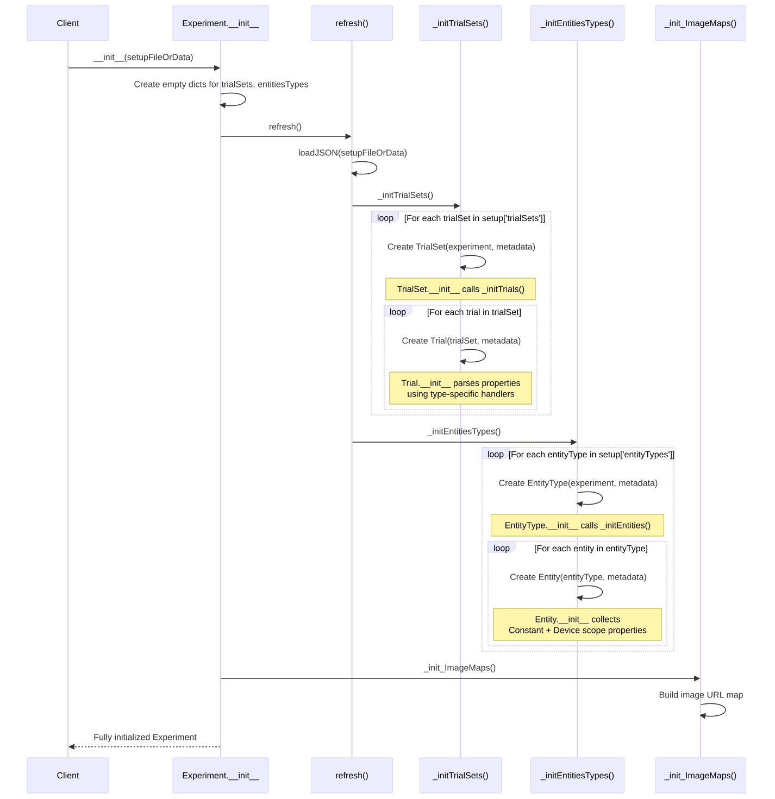
Entity Property Collection¶
When an Entity is created, it collects properties from two sources:
Property Type System¶
Trial Property Parsing¶
When a Trial is initialized, each property value is parsed according to its type. The type is defined in the parent TrialSet's attributeTypes:
Parser contract: Every _parseProperty_* method returns (columns: list[str], values: list). For most types this is a single column/value pair. For location, it expands to three columns.
Property Scopes¶
Properties exist at different scopes throughout the hierarchy:
| Scope | Source | Changes per trial? | Access |
|---|---|---|---|
| Constant | EntityType attributeTypes with scope='Constant' |
No | entity.properties |
| Device | Entity attributes in metadata |
No | entity.properties |
| Trial | Trial entities data |
Yes | entity.trialProperties(setName, trialName) |
| All combined | Constant + Device + Trial (forward-filled) | Yes | entity.allPropertiesTable |
Containment Hierarchy Resolution¶
The Problem¶
In ArgosWEB, entities can be "contained in" other entities (e.g., a sensor mounted on a pole, which is placed at a location). Child entities should inherit properties (especially location) from their parents.
The Solution: fillContained¶
Walk Example¶
Consider this containment chain:
Location_A (has location: {name: "Field", coordinates: [34.8, 32.0]})
└── Pole_01 (contained in Location_A, has attribute: height=3.0)
└── Sensor_01 (contained in Pole_01, has attribute: threshold=25.0)
After fill_properties_by_contained:
# Sensor_01 gets:
{
"deviceItemName": "Sensor_01",
"deviceTypeName": "Sensor",
"threshold": 25.0, # own attribute
"height": 3.0, # inherited from Pole_01
"mapName": "Field", # inherited from Location_A (via location)
"latitude": 32.0, # inherited from Location_A
"longitude": 34.8, # inherited from Location_A
"containedInType": "Pole",
"containedIn": "Pole_01"
}
Pandas DataFrame Interface¶
DataFrame Generation Map¶
Every major object exposes one or more DataFrame properties. This diagram shows how they are computed:
Relationship Between DataFrames¶
Serialization (toJSON)¶
Each object can be serialized back to a JSON-compatible dict. The serialization is hierarchical:
Deprecated Interface¶
Several methods and properties are deprecated but maintained for backwards compatibility. They all emit DeprecationWarning and delegate to current methods:
| Deprecated | Replacement | Class |
|---|---|---|
trial.deployEntitiesTable |
trial.entitiesTable |
Trial |
trial.designEntities |
trial.entities |
Trial |
trial.designEntitiesTable |
trial.entitiesTable |
Trial |
trial.deployEntities |
trial.entities |
Trial |
entity.trial(set, name, state) |
entity.trialProperties(set, name) |
Entity |
entity.designProperties |
entity.allTrialProperties |
Entity |
entity.deployProperties |
entity.allTrialProperties |
Entity |
entity.trialDesign(set, name) |
entity.trialProperties(set, name) |
Entity |
entity.trialDeploy(set, name) |
entity.trialProperties(set, name) |
Entity |
Migration
If you see DeprecationWarning from pyArgos, update your code to use the replacement methods. The deprecated methods may be removed in a future version.
Design Decisions¶
Why dict subclasses for TrialSet and EntityType?¶
TrialSet and EntityType extend dict rather than using a plain attribute. This enables natural Python dictionary syntax for accessing children while still providing rich properties:
# Natural dict access
trial = experiment.trialSet["design"]["morning"]
entity = experiment.entityType["Sensor"]["Sensor_01"]
# But also rich properties
experiment.trialSet["design"].trialsTable # DataFrame
experiment.entityType["Sensor"].entitiesTable # DataFrame
Why Pandas for everything?¶
Experiment metadata is inherently tabular (entities have rows of properties, trials have rows of attributes). Pandas provides:
- Filtering:
df[df.entityType == "Sensor"] - Joining: merge entity data with trial data
- Export:
to_csv(),to_parquet(),to_json() - Familiar API for data scientists working with pyArgos
Why factory pattern?¶
The same Experiment interface is needed regardless of whether data comes from a local file, a ZIP archive, or a remote server. The factory pattern:
- Hides the complexity of source detection (ZIP vs JSON vs GraphQL)
- Handles version migration transparently
- Returns a uniform interface that client code can rely on